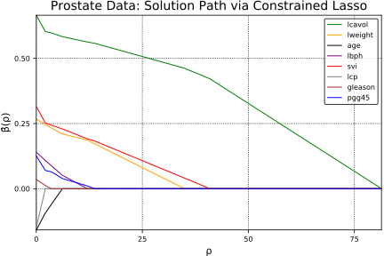
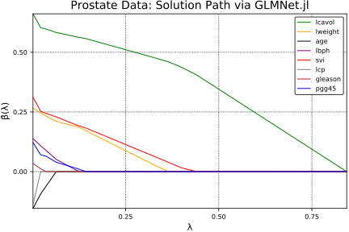

Prostate Data
This demonstration solves a regular, unconstrained lasso problem using the constrained lasso solution path (lsq_classopath.jl).
The prostate data come from a study that examined the correlation between the level of prostate specific antigen and a number of clinical measures in men who were about to receive a radical prostatectomy. (Stamey et al. (1989))
Let's load and organize the prostate data. Since we are interested in the following variables as predictors, we extract them and create a design matrix Xz:
lcavol: log(cancer volume)lweight: log(prostate weight)age: agelbph: log(benign prostatic hyperplasia amount)svi: seminal vesicle invasionlcp: log(capsular penetration)gleason: Gleason scorepgg45: percentage Gleason scores 4 or 5
The response variable is lpsa, which is log(prostate specific antigen).
using ConstrainedLasso
prostate = readcsv(joinpath(Pkg.dir("ConstrainedLasso"), "docs/src/demo/misc/prostate.csv"), header=true) tmp = Int[] labels = ["lcavol" "lweight" "age" "lbph" "svi" "lcp" "gleason" "pgg45"] for i in labels push!(tmp, find(x -> x == i, prostate[2])[1]) end Xz = Array{Float64}(prostate[1][:, tmp])
97×8 Array{Float64,2}:
-0.579818 2.76946 50.0 -1.38629 0.0 -1.38629 6.0 0.0
-0.994252 3.31963 58.0 -1.38629 0.0 -1.38629 6.0 0.0
-0.510826 2.69124 74.0 -1.38629 0.0 -1.38629 7.0 20.0
-1.20397 3.28279 58.0 -1.38629 0.0 -1.38629 6.0 0.0
0.751416 3.43237 62.0 -1.38629 0.0 -1.38629 6.0 0.0
-1.04982 3.22883 50.0 -1.38629 0.0 -1.38629 6.0 0.0
0.737164 3.47352 64.0 0.615186 0.0 -1.38629 6.0 0.0
0.693147 3.53951 58.0 1.53687 0.0 -1.38629 6.0 0.0
-0.776529 3.53951 47.0 -1.38629 0.0 -1.38629 6.0 0.0
0.223144 3.24454 63.0 -1.38629 0.0 -1.38629 6.0 0.0
0.254642 3.60414 65.0 -1.38629 0.0 -1.38629 6.0 0.0
-1.34707 3.59868 63.0 1.26695 0.0 -1.38629 6.0 0.0
1.61343 3.02286 63.0 -1.38629 0.0 -0.597837 7.0 30.0
⋮ ⋮
3.30285 3.51898 64.0 -1.38629 1.0 2.32728 7.0 60.0
2.02419 3.7317 58.0 1.639 0.0 -1.38629 6.0 0.0
1.73166 3.36902 62.0 -1.38629 1.0 0.300105 7.0 30.0
2.80759 4.71805 65.0 -1.38629 1.0 2.46385 7.0 60.0
1.56235 3.69511 76.0 0.936093 1.0 0.81093 7.0 75.0
3.24649 4.10182 68.0 -1.38629 0.0 -1.38629 6.0 0.0
2.5329 3.67757 61.0 1.34807 1.0 -1.38629 7.0 15.0
2.83027 3.8764 68.0 -1.38629 1.0 1.32176 7.0 60.0
3.821 3.89691 44.0 -1.38629 1.0 2.16905 7.0 40.0
2.90745 3.39619 52.0 -1.38629 1.0 2.46385 7.0 10.0
2.88256 3.77391 68.0 1.55814 1.0 1.55814 7.0 80.0
3.47197 3.975 68.0 0.438255 1.0 2.90417 7.0 20.0
y = Array{Float64}(prostate[1][:, end-1])
97-element Array{Float64,1}:
-0.430783
-0.162519
-0.162519
-0.162519
0.371564
0.765468
0.765468
0.854415
1.04732
1.04732
1.26695
1.26695
1.26695
⋮
3.63099
3.68009
3.71235
3.98434
3.9936
4.02981
4.12955
4.38515
4.68444
5.14312
5.47751
5.58293
First we standardize the data by subtracting its mean and dividing by its standard deviation.
n, p = size(Xz) for i in 1:size(Xz,2) Xz[:, i] -= mean(Xz[:, i]) Xz[:, i] /= std(Xz[:, i]) end Xz
97×8 Array{Float64,2}:
-1.63736 -2.00621 -1.86243 … -0.863171 -1.04216 -0.864467
-1.98898 -0.722009 -0.787896 -0.863171 -1.04216 -0.864467
-1.57882 -2.18878 1.36116 -0.863171 0.342627 -0.155348
-2.16692 -0.807994 -0.787896 -0.863171 -1.04216 -0.864467
-0.507874 -0.458834 -0.250631 -0.863171 -1.04216 -0.864467
-2.03613 -0.933955 -1.86243 … -0.863171 -1.04216 -0.864467
-0.519967 -0.362793 0.0180011 -0.863171 -1.04216 -0.864467
-0.557313 -0.208757 -0.787896 -0.863171 -1.04216 -0.864467
-1.80425 -0.208757 -2.26537 -0.863171 -1.04216 -0.864467
-0.956085 -0.897266 -0.116315 -0.863171 -1.04216 -0.864467
-0.92936 -0.0578992 0.152317 … -0.863171 -1.04216 -0.864467
-2.28833 -0.0706369 -0.116315 -0.863171 -1.04216 -0.864467
0.223498 -1.41472 -0.116315 -0.299282 0.342627 0.199211
⋮ ⋱ ⋮
1.65688 -0.256675 0.0180011 … 1.7927 0.342627 1.26289
0.572009 0.239854 -0.787896 -0.863171 -1.04216 -0.864467
0.323806 -0.606718 -0.250631 0.342907 0.342627 0.199211
1.23668 2.54221 0.152317 1.89038 0.342627 1.26289
0.180156 0.154448 1.6298 0.70824 0.342627 1.79473
1.60906 1.10379 0.555266 … -0.863171 -1.04216 -0.864467
1.00362 0.113497 -0.384948 -0.863171 0.342627 -0.332628
1.25592 0.577607 0.555266 1.07357 0.342627 1.26289
2.09651 0.625489 -2.66832 1.67954 0.342627 0.55377
1.3214 -0.543304 -1.59379 1.89038 0.342627 -0.509907
1.30029 0.338384 0.555266 … 1.24263 0.342627 1.97201
1.80037 0.807764 0.555266 2.20528 0.342627 -0.155348
Now we solve the problem using solution path algorithm.
βpath, ρpath, = lsq_classopath(Xz, y);
βpath
8×9 Array{Float64,2}:
0.000197119 0.421559 0.461915 … 0.597645 0.603245 0.665561
0.0 0.0 0.0 0.232715 0.246191 0.266408
0.0 0.0 0.0 -0.0601318 -0.0936838 -0.158234
0.0 0.0 0.0 0.0882392 0.108105 0.14034
0.0 0.0 0.0403562 0.243534 0.252539 0.315269
0.0 0.0 0.0 … 0.0 0.0 -0.148508
0.0 0.0 0.0 0.0 0.0121929 0.0354652
0.0 0.0 0.0 0.0646193 0.0699873 0.125787
We plot the solution path below.
using Plots; pyplot(); colors = [:green :orange :black :purple :red :grey :brown :blue] plot(ρpath, βpath', xaxis = ("ρ", (minimum(ρpath), maximum(ρpath))), yaxis = ("β̂(ρ)"), label=labels, color=colors) title!("Prostate Data: Solution Path via Constrained Lasso")

Below, we solve the same problem using GLMNet.jl package.
using GLMNet; path = glmnet(Xz, y, intercept=false); path.betas
plot(path.lambda, path.betas', color=colors, label=labels, xaxis=("λ"), yaxis= ("β̂(λ)")) title!("Prostate Data: Solution Path via GLMNet.jl")

Follow the link to access the .ipynb file of this page.